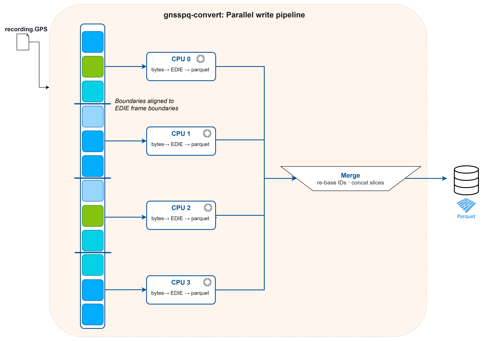
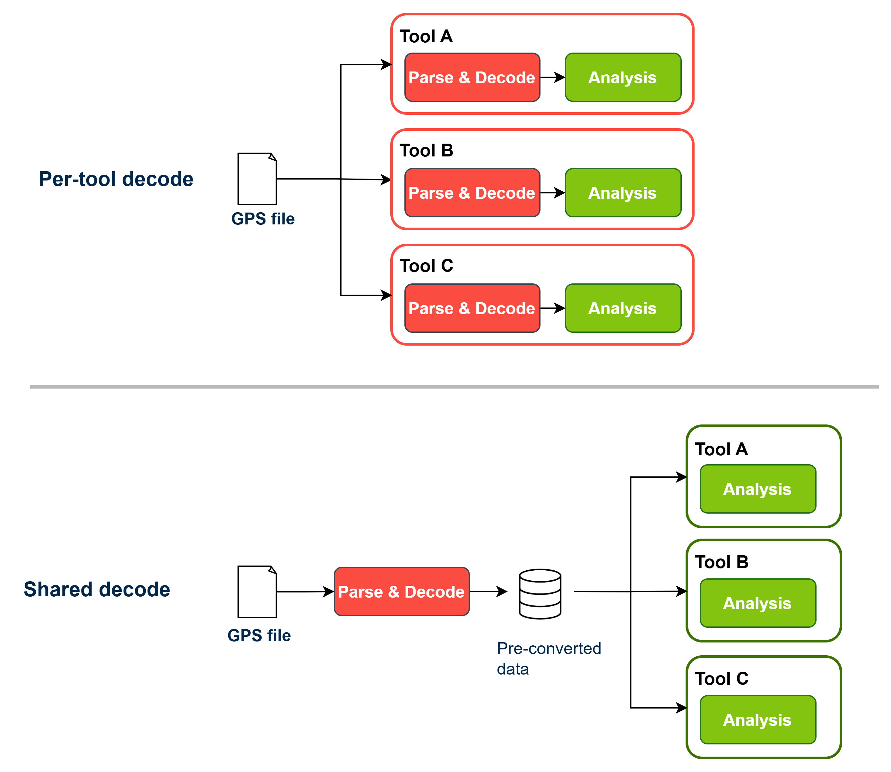
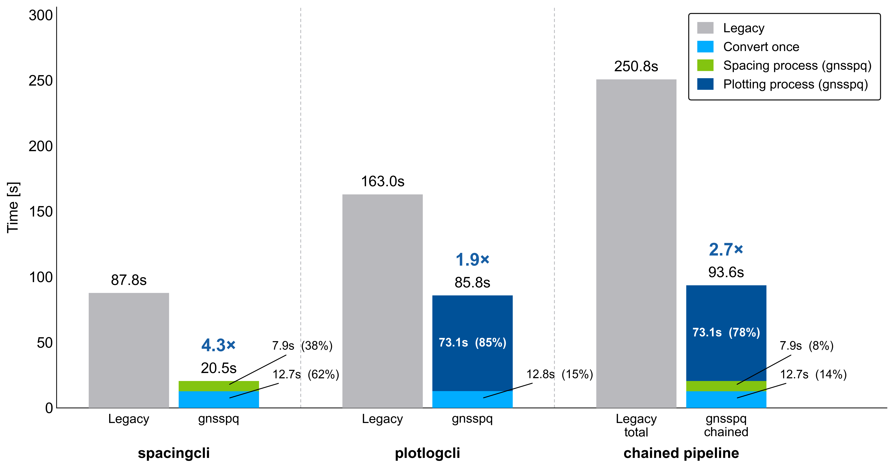

Decode Once — A Local Database for GNSS Logs

Hexagon | NovAtel · Co-Authored Technical Publication
Every tool that touches a raw NovAtel GNSS receiver log has to decode it first — and historically, every tool paid that cost independently, re-parsing the same file from byte one. I co-authored a technical publication and built the underlying tool that eliminates this "decode tax": a local database layer that decodes a receiver log once, in a single pass, and serves every downstream question from a fast, structured store instead of a repeated full-file re-read.
Key Accomplishments
🛠️ Conversion Pipeline
- Designed a single-pass pipeline that decodes a raw GNSS receiver log into a compressed, columnar local database, parallelizing the decode across CPU workers for large multi-gigabyte files
- Built a self-describing database format that preserves nested and variable-length message structures without flattening or data loss, verified byte-for-byte against the source log
- Tuned column-level compression to balance storage footprint against conversion throughput across both ASCII and binary log formats

🔎 Query Layer
- Built a Python reader interface that returns any decoded message type as a ready-to-use DataFrame, removing the need for analysis code to understand the receiver's binary/ASCII protocol at all
- Supported filtered, cross-message-type queries — for example, joining position data with signal-strength observations over a specific time window — without re-parsing the source file

📈 Adoption & Impact
- Deployed internally to accelerate existing diagnostic tools used by the receiver engineering team, cutting chained tool runtimes by sharing one decoded pass instead of repeating it per tool
- Co-authored a technical publication detailing the design, performance benchmarks, and a real-world diagnostic case study
Quantifiable Impact
- ⚡ 83% faster conversion via parallelized decoding compared to a single-threaded converter
- 💾 78% smaller storage footprint after columnar compression on ASCII-format logs
- 🎯 98% reduction in time-to-answer for repeated diagnostic queries against the same log
- 🔗 62.7% reduction in combined runtime when chaining existing internal tools against the same recording

Back
Get In Touch
If you have any questions or want to get in touch, please feel free to contact me!